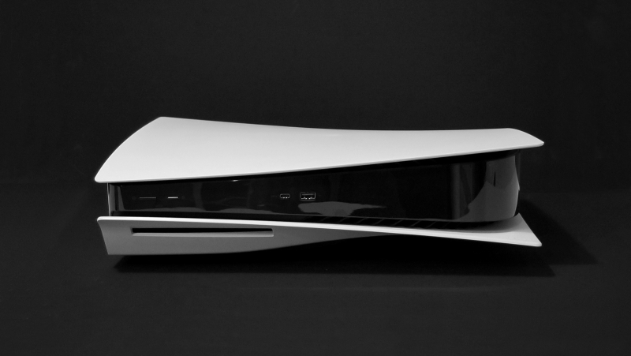

Обзор Sony PlayStation 5: тактильно-эксклюзивный некстген
В жизни она, кстати, намного красивееВначале хотел бы отметить: я никогда не был безапелляционным поклонником Sony и каждый раз при выборе PlayStation как домашней развлекательной системы перевес в её пользу создавал один-единственный аргумент, и вы знаете, о чём я. Начинается на «э», оканчивается на «ксклюзивы». Но, по моему исключительно субъективному мнению, стартовая линейка эксклюзивных игр этого поколения получилась, скажем так, на проверенного ценителя. Будто Sony и не пытается привлекать новых игроков, а фокусируется на надёжных любителях своих проектов. Но у PS5 есть и ещё один серьёзный козырь в рукаве — геймпад DualSense с необыкновенной тактильной отдачей (кинестетики, ликуем). Достаточно ли это круто, чтобы в очередной раз сделать выбор в пользу Sony? Спойлер: мне достаточно! Конечно, не обошлось без нюансов, но обо всём по порядку…
#Большая, стильная, «пугающая»
Мне всегда импонировала лаконичность в дизайне консолей Sony (естественно, за редким исключением в лице не самой изящной PS4 Pro). А потому дизайн PS5 казался слишком уж вычурным что почти полгода назад во время демонстрации, что по свежим снимкам. Но вот же интересная метаморфоза: в жизни консоль выглядит намного более приятной и элегантной. Во всяком случае, в моём скромном скандинавском интерьере неофутуристичный японский гость прижился довольно быстро и совсем не мозолит взгляд. Да и умеренная подсветка корпуса изнутри добавляет внешнему виду пару баллов.